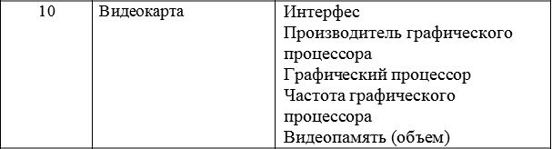

<!DOCTYPE html>
<html lang="en">
  <head>
    <meta charset="UTF-8" />
    <meta name="viewport" content="width=device-width, initial-scale=1.0" />
    <title>Прокопенко Артур</title>
  </head>
  <body>
    <script>
//-------------------------------------------------------
      "use strict";
      document.write(
        `<h1 style="text-align:center;color:red;">
        Задание 1
        </h1>`
      );
      document.write(
        `<h2 style="text-align:center;color:orange;">
            В соответствии со своим вариантом определить объект, с заданными полями и 
            методом вывода информации об объекте. Объект создается с помощью объектного литерала.<br>
        </h2>`
      );
      document.write(
        `<p style="font-size:21px;margin:0;text-align:center;">
        <br>
        
        </p>`
      );
      var video_card = {
        interface: 'PCLe 3.0 x16',
        graphics_processor_manufacturer: 'Nvidia',
        graphic_processor: 'TU117',
        graphics_processor_frequency: '1695 МГц',
        video_memory_volume: '8 ГБ',
      }
      document.write(
        `<h2 style="text-align:center;color:darkblue;">
            Созданный объект: ${video_card}
        </h2>`
      )
//-------------------------------------------------------
      document.write(
        `<h1 style="text-align:center;color:red;">
        Задание 2
        </h1>`
      );
      document.write(
        `<h2 style="text-align:center;color:orange;">
            Написать функцию-конструктор для создания объектов в соответствии с вариантом. 
            Опредилить геттеры и сеттеры для получения доступа к свойствам. 
            В прототип объектов добавить свойство – дата выхода на рынок, 
            метод отображения информации об объекте. <br>
        </h2>`
      );
      function VideoCard(pInterface, pGraphicsProcessorManufacturer, pGraphicProcessor,
                         pGraphicsProcessorFrequency, pVideoMemoryVolume) {
        this.interface = pInterface;
        this.graphics_processor_manufacturer = pGraphicsProcessorManufacturer;
        this.graphic_processor = pGraphicProcessor;
        this.graphics_processor_frequency = pGraphicsProcessorFrequency;
        this.video_memory_volume = pVideoMemoryVolume;
      }
      VideoCard.prototype.date_of_market_entry = '26.09.2021';
      VideoCard.prototype.info = function() {
          document.write(`<h2 style="text-align:center;color:pink;">
            Интерфейс: ${this.interface}<br>
            Производитель графического процессора: ${this.pGraphicsProcessorManufacturer}<br>
            Графический процессор: ${this.graphic_processor}<br>
            Частота графического процессора: ${this.graphics_processor_frequency}<br>
            Видеопамять (объем): ${this.video_memory_volume}<br>
            </h2>`)
      }
      document.write(
        `<h2 style="text-align:center;color:darkblue;">
            Функция-конструктор: ${VideoCard}
        </h2>`
      )
//-------------------------------------------------------
      document.write(
        `<h1 style="text-align:center;color:red;">
        Задание 3
        </h1>`
      );
      document.write(
        `<h2 style="text-align:center;color:orange;">
        Описать класс, описывающий объекты в соответствии с вариантом. 
        Предусмотреть конструктор с параметрами, геттеры и сеттеры для получения доступа 
        к свойствам, метод метод отображения информации об объекте. <br>
        </h2>`
      );
      class MyVideoCard{
          constructor(pInterface, pGraphicsProcessorManufacturer, pGraphicProcessor,
          pGraphicsProcessorFrequency, pVideoMemoryVolume){
            this.interface = pInterface;
            this.graphics_processor_manufacturer = pGraphicsProcessorManufacturer;
            this.graphic_processor = pGraphicProcessor;
            this.graphics_processor_frequency = pGraphicsProcessorFrequency;
            this.video_memory_volume = pVideoMemoryVolume;
          }
          info(){
            document.write(`<h2 style="text-align:center;color:pink;">
            Интерфейс: ${this.interface}<br>
            Производитель графического процессора: ${this.graphics_processor_manufacturer}<br>
            Графический процессор: ${this.graphic_processor}<br>
            Частота графического процессора: ${this.graphics_processor_frequency}<br>
            Видеопамять (объем): ${this.video_memory_volume}<br>
            </h2>`)
            }      
          }
      document.write(
        `<h2 style="text-align:center;color:darkblue;">
            Класс: ${MyVideoCard}
        </h2>`
      )
//-------------------------------------------------------
      document.write(
        `<h1 style="text-align:center;color:red;">
        Задание 4
        </h1>`
      );
      document.write(
        `<h2 style="text-align:center;color:orange;">
            Описать класс, являющийся наследником класса задаания 3. 
            В производном классе добавить свойства: дата выхода на рынок, стоимость. 
            Переопределить метод вывода информации об объекте. <br>
        </h2>`
      );
      class NewVideoCard extends MyVideoCard{
          constructor(pInterface, pGraphicsProcessorManufacturer, pGraphicProcessor,
          pGraphicsProcessorFrequency, pVideoMemoryVolume, pDateOfMarketEntry, pCost){
              super(pInterface, pGraphicsProcessorManufacturer, pGraphicProcessor,
              pGraphicsProcessorFrequency, pVideoMemoryVolume);
              this.date_of_market_entry = pDateOfMarketEntry;
              this.cost = pCost;
          }
          info(){
              super.info();
              document.write(`<h2 style="text-align:center;color:pink;">
              Дата выхода на рынок: ${this.date_of_market_entry}<br>
              Стоимость: ${this.cost}<br>
            </h2>`)
          }
      }
      document.write(
        `<h2 style="text-align:center;color:darkblue;">
            Класс-наследник: ${NewVideoCard}
        </h2>`
      )
//-------------------------------------------------------
      document.write(
        `<h1 style="text-align:center;color:red;">
        Задание 5
        </h1>`
      );
      document.write(
        `<h2 style="text-align:center;color:orange;">
        На основе разработанного класса задания 4 создать массив объектов. 
        Определить объекты с максимальной и минимальной стоимостью, 
        суммарную стоимость всех объектов, вычислить среднюю стоимость объекта, 
        подсчитать количество объектов со стоимостью выше средней. 
        Для выполнения задания использовать встроенные методы массивов и объект Math. <br>
        </h2>`
      );
      let my_arr = [new NewVideoCard('1','2','3','z','x','c',1),
      new NewVideoCard('2','2','2','2','2','2',2),
      new NewVideoCard('3','3','3','3','3','3',3),
      new NewVideoCard('4','4','4','4','4','4',4),
      new NewVideoCard('5','5','5','5','5','5',5),
      new NewVideoCard('6','6','6','6','6','6',6),
      new NewVideoCard('7','7','7','7','7','7',7),
    ]
      my_arr.sort((a, b) => a.cost - b.cost)
      let min = my_arr[0]
      let max = my_arr[my_arr.length - 1]
      //let sum = 0
      /*for(let i= 0; i< my_arr.length; i++){
          sum += my_arr[i].cost
      }
      */

      let sum = my_arr.reduce((a, b) => a + b.cost, 0);
      //alert(total_number)
      let average_number = (sum / my_arr.length) || 0;
      let above_average_number = my_arr.reduce((res, item, index) => {
          if(item.cost > average_number) res += 1
          return res
      }, 0)
      min.info()
      max.info()
      document.write(
        `<h2 style="text-align:center;color:darkblue;">
            Общая стоимость: ${sum}<br>
            Средняя стоимость: ${average_number}<br>
            Количество объектов со стоимостью выше средней: ${above_average_number}<br>
        </h2>`
      )
    </script>
  </body>
</html>